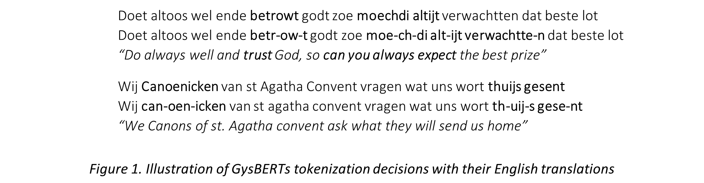
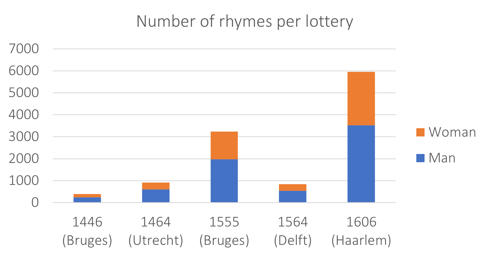
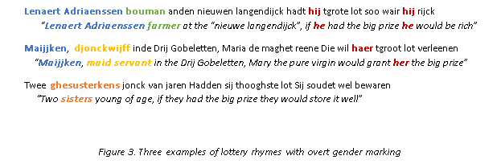
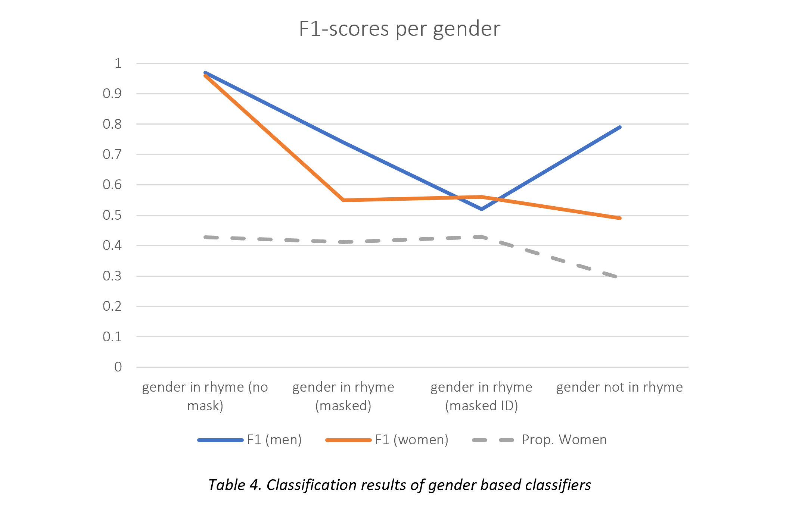

Sara Budts(1), Marly Terwisscha van Scheltinga(1,2) and Jeroen Puttevils(1)
This page serves as the methodological accompaniment to the paper “(Fe)male voices on stage”. Set against the backdrop of lotteries in the late medieval and early modern Low Countries, our paper zooms in on female voices in that society by means of a large-scale analysis of lottery rhymes. While lottery rhymes have a lot of potential as a historical source, they don't reveal their secrets easily. On the one hand, the sheer number of preserved lottery rhymes makes it hard for an individual researcher to study them all by means of close reading. On the other hand, their variability in spelling precludes a lot of digital approaches that are usually applied in cases where the primary source is extensive. We attempted to overcome both these issues by joining forces with GysBERT, a Pretrained Language Model of historical Dutch that is sufficiently robust to deal with our varied sources, but that has not yet made it into the toolbox of many (digital) historians.
Ever since Artificial Intelligence emerged as a field, the ability to understand and produce human(like) language by means of machines has figured prominently on its agenda. Despite this focus, however, seemingly fluent AI models like OpenAI’s ChatGPT have emerged only very recently. ChatGPT and its colleagues (e.g. Google Translate, DeepL, Grammarly etc.) are all indebted to a rapid series of technological breakthroughs in the late 2010s that culminated in the emergence of deep language models. These models are AI algorithms more commonly known as "neural networks" that have been "trained" by computer engineers to "learn" one or several languages. By processing enormous amounts of (human-written) texts in a given language, the models gradually capture the statistical regularities of that language to such an extent that they eventually have come to encode what words mean, how they are combined into grammatical sentences, which expressions come across as natural, how sentences combine into paragraphs and even into coherent texts. They do not have true linguistic intuition like humans do, but it is surprising how closely our linguistic knowledge can be approximated by the word probability computations of a very advanced, billion-parameter statistical model.
In order to understand how language models acquire a seemingly intuitive understanding of language, we first need to know what they are made of. Like all neural networks, language models are organized constellations of parameter settings that can be configured in a clever way to turn a given input into a desired output. You could train a network that takes pictures (or constellations of pixels) as input and outputs labels like "cat" or "dog", depending the animal in the picture. In the realm of language, you can train a network that takes tweets as input and outputs whether or not they contain hate speech. Importantly, the training process does not involve any pre-given, hard-coded rules: when the networks is provided with plenty of input-output pairs, it will compute the input-output mapping all by itself. It will figure out which features and which combinations of features in the input are the best cues to predict (some aspects of) the output.
One of the most common types of network architectures, the transformer model, learns through taking part in two different but simultaneous training tasks. In one task, the network receives a sentence in which one word is masked (i.e. the models input) and needs to reconstruct which word that was (i.e. the model’s output). In the other, the network receives two sentences from a text as input and needs to indicate whether the second immediately followed the first in the original text. At first, the guesses of the network will be completely off. After each failure, however, the network adjust its internal settings in such a way so that the next time it receives the same input, its output will be closer to the correct one. When this procedure is repeated over and over, the network will get better and better at these tasks as it learns to focus on the relevant aspects and figure out which combinations of input features best predict the right output class.
Interestingly, the actual input and output of the language models during these training tasks are merely a by-product of the training process. What matters most is the network itself, and especially its internal parameter settings after training. The missing-word and combine-the-clauses games are devised in such a way that in order to achieve a good result, the network needs to encode semantics, grammar and text coherence in its parameters in a highly abstract way. As humans, we cannot see how these linguistic features are captured in the parameter settings - there are too many of them and they aren't insightful to our eyes - but the algorithm’s ability to perform its linguistic training tasks indicates that overall the network has learnt the structure and semantics of its input language.
The broad range of linguistic phenomena that these models pick up on during training nicely illustrates two of their fundamental traits. Firstly, they are highly flexible tools that can be used for an infinite number of tasks, ranging from spelling correction over document summarization to semi-automated discourse analysis. Secondly, they are no stand-alone products. Once they have been trained sufficiently, they're typically made available to a wider audience, who then incorporate them in their own algorithms to perform specific tasks they need to solve. This last aspect has been a huge game-changer for programming language enthusiasts. When a pretrained language model has been made available, they no longer need to teach a network what a language looks like from scratch. Instead, they teach a simple classifier which parts of the language model’s existing knowledge are most informative for the task at hand. Instead of encoding new information in the model, they can train a much smaller model on top of the pretrained language model to get the relevant information out.
The versatility of these language models translates into a broad range of potential uses. If you want to search documents for fragments about an abstract topic like “health and disease”, for instance, you can collect a few passages where people are ill, attach a classifier to a language model and teach the classifier to retrieve similar passages from unseen text. In a sense, Pretrained Language Models form the middle ground between traditional reading and more widely spread distant-reading techniques based on word counts. Like a traditional reader, these models are sufficiently flexible to infer non-literal meanings and can abstract over spelling variation. Like a word count-based distant reading technique, these models are capable of sifting through large volumes of data at remarkable speed, and are excellent at picking up on recurrent patterns (and deviations from these patterns) in the datasets provided to them.
Historians who study recent events could use models of present day language to explore their topic of interest, as this blogpost of the Programming Historian does for Brexit by means of GPT-2. Historical models for older language varieties are still a rarity, but their number is steadily growing. For nineteenth century English, four types of neural language models have been developed by Hosseini and others . Fonteyn and Manjavacas have developed two language models for even older historical texts: one for historical English - MacBERTh - and one for historical Dutch - GysBERT. Because the case study this text accompanies investigates Early Modern Dutch lottery rhymes, GysBERT has been of great use during our analysis. In the following section, GysBERT will be described in more detail.
The present section gives a brief overview of some relevant properties of the GysBERT model, developed by Manjavacas and Fonteyn at the University of Leiden. All information in this section comes from their paper that accompanied GysBERT's release
GysBERT has been trained on the Digital Library of Dutch Literature (DBNL ) and Delpher. The DBNL is relatively small in size, but it contains a representative selection of historical Dutch literature that has been carefully curated and transcribed. Its temporal scope comprises the entire written history of the Dutch language, but was restricted to the years in between 1500 and 1950 for the sake of this project. Delpher contains OCRs of over 130 million scanned pages of historical books, newspapers and journals written between 1618 and 1999. Unfortunately, the Delpher OCRs are of varying quality. To assure that only data of sufficient quality made the cut, Fonteyn and Manjavacas used the small DBNL-dataset to assess the text quality of the Delpher-data.
The final training set for GysBERT was composed of all DBNL-texts from the 16th century onwards (1.3 billion tokens or words), supplemented with all Delpher texts of sufficient quality written between 1618 and 1950 (5.8 billion tokens). This totalled in a training set of about 7.1 billion tokens written between the 1500s and the 1900s, but with a heavy bias towards the later centuries. This is important in the light of the current research project: our earliest lottery rhymes (1446) predate GysBERTs oldest training material, and even the youngest rhymes (1606) don't find a temporal match in Delpher. In that respect, only the (scarce) DBLN part of GysBERTs training material is of similar age as our sources.
Perhaps the most important part of GysBERTs implementation is its WordPiece tokenizer. Tokenizers are used to split up running text in smaller chunks, often just words, which they then feed to the actual language model to process. Importantly, the tokenizer in GysBERT does not just break down a text into words, but rather into frequently occurring fragments of words, which allows the model to infer the meaning of the an unknown word from its subparts.
Figure 1 illustrates this tokenisation process. It provides two original rhymes along with their tokenised version and English translation. Hyphens, marked in bold, indicate positions where the GysBERT tokenizer has split up words into fragments. Speakers of Dutch may notice that such fragments often occur in words were alternative spellings are plausible (e.g. altijt – altijd; thuijs – thuis) or where verbs are conjugated (betrowt, moechdi, gesent). In all such cases, the split allows the model to learn that some word fragments are interchangeable with others in certain contexts (e.g. “uij” en “ui” in “thuijs”) and how it should combine various fragments to infer the meaning of a word (e.g. ‘moechdi’ as ‘moogt’ (may) + ‘di’ (you)).
This appendix won't go into the architecture of GysBERT as a whole. We refer the interested reader to the original paper or this blogpost, which explains the structure of a transformer Language Model in detail.
The research we carried out can be divided into two stages. In the first stage, we charted the non-gender related variation present in our corpus of lottery rhymes. We tested if the lottery rhymes showed clear geographical, diachronic and/or social divides by letting a GysBERT-based classifier label our data for, respectively, the place where the ticket was bought, the year the lottery was held and the number of tickets bought by the participant. This stage was necessary in order to ensure that any difference that would later be found is really due to gender and could not be better explained by another variable.
In the second stage, we looked at gender specifically. For this stage too we extended GysBERT with several classifiers, this time with the participant’s gender as the output category, and trained the models to search for gender-specific discursive patterns. We built several such classifiers for different types of lottery rhymes. An overview of their performance is given in section 3.6.
Once our classifiers were trained to trace discursive differences between two categories, we used them to label a held-out set of rhymes and manually inspected the top sample for recurrent discursive structures (3.7).
The lottery rhymes in our dataset cover four different lotteries: Bruges (1446 and 1555), Utrecht (1464), Delft (1564) and Haarlem (1606). For all lotteries but Delft 1564, we harvested the rhymes from collector registers (“collecteursregisters”), in which clerks wrote down a name and a lottery rhyme for each person who wanted to participate in the lottery, as well as the number of tickets they bought. For the lottery held at Delft in 1564, the rhymes were obtained from the drawing register (“trekkersregister”), which only contains the rhymes that actually won a prize. As people who bought more tickets have a higher chance to win a prize, the selection of rhymes in the drawing registers may be skewed in favour of the richer participants.
All rhymes have been manually transcribed and labelled for gender, either on the basis of gender markers in the rhymes themselves, or on the basis of additional information on the buyer (e.g. their name or profession as written down in the registers).
The resulting dataset contains 11 332 rhymes. As Figure 2 indicates, there is a big difference in the number of rhymes we obtained for each lottery, but the proportion of rhymes submitted by women remains fairly constant, hovering between 34.4% (Utrecht 1464) and 40.8% (Haarlem 1606).
Apart from the number of lottery rhymes that have been preserved, the lotteries also differ in terms of the number of tickets that their participants tended to buy (cf. Table 1). This number went up considerably through time. As all tickets were read out loud to the audience, the more tickets someone bought, the more often their message would be spread.
| Lottery | Average no. of tickets bought |
|---|---|
| 1446 (Bruges) | (no data) |
| 1464 (Utrecht) | 1.42 |
| 1555 (Bruges) | 3.67 |
| 1564 (Delft) | 6.89 |
| 1606 (Haarlem) | 13.56 |
The lotteries of Bruges (1555) and Harlem (1606) have a high share of tickets bought and collected remotely, by people not living in the town where the lottery was organised. Out of the 4034 tickets of the Harlem lottery, about 30% (1785) were bought in Amsterdam. The 1555 lottery held in Bruges varied even more in geographical scope (Table 2).
| Place of collection | No. rhymes |
|---|---|
| Antwerp | 1694 |
| Mechelen | 323 |
| Bruges | 233 |
| Ghent | 168 |
| The Hague | 145 |
| Oudenaarde | 102 |
| Utrecht | 90 |
| Leuven | 78 |
| Amsterdam | 76 |
| Zierikzee | 47 |
| Middelburg | 44 |
| Lier | 43 |
| Goes | 41 |
| Haarlem | 32 |
| Borgerhout | 31 |
| Belle | 29 |
| Arnemuiden | 29 |
| Diksmuide | 20 |
| Kortrijk | 6 |
A considerable share of the lottery rhymes contain some sort of self-identification. It was fairly common for participants to mention their name, their profession, their marital status or other references to their gender by means of gendered nouns or pronouns (cf. Figure 3).
When such rhymes were fed to our gender-classifier, the network very easily picked up on the overt gender markers and labelled them correctly (cf. section 3.6). While this proves that GysBERT is able to classify sentences based on morphological markers and word meaning, it reveals only little about any discursive peculiarities of the rhymes.
To force GysBERT to focus on discursive patterns instead, we semi-automatically removed all overt gender marking from the rhymes. We used GysBERT’s confidence scores to manually compile a list of overt gender markers and programmatically mask these to obtain two additional, anonymised, datasets. In the first, we replaced all overt gender markers by the same, generic “[IDENTIFIER]” tag; in the second, we replaced names, professions, gendered nouns and pronouns with the tags “[NAAM]”, “[BEROEP]”, “[GENDER_NOMEN]” and “[PRON]” respectively.
The lottery rhymes in our dataset cover four different lotteries: Bruges (1446 and 1555), Utrecht (1464), Delft (1564) and Haarlem (1606). For all lotteries but Delft 1564, we harvested the rhymes from collector registers (“collecteursregisters”), in which clerks wrote down a name and a lottery rhyme for each person who wanted to participate in the lottery, as well as the number of tickets they bought. For the lottery held at Delft in 1564, the rhymes were obtained from the drawing register (“trekkersregister”), which only contains the rhymes that actually won a prize. As people who bought more tickets have a higher chance to win a prize, the selection of rhymes in the drawing registers may be skewed in favour of the richer participants.
All rhymes have been manually transcribed and labelled for gender, either on the basis of gender markers in the rhymes themselves, or on the basis of additional information on the buyer (e.g. their name or profession as written down in the registers).
To prepare our data for classification, we first removed all duplicates from the dataset and then tokenized our input data. We extended GysBERT’s WordPiece tokenizer with the five masking tokens of our anonymised dataset. We then randomly selected 80% of our data for training used the remaining 20% for validation. To prevent diachronic differences from affecting gender classification and vice versa, we stratified both training and validation data for gender and the year in which the lottery was held.
We built our classifiers on top of GysBERT by means of a “BertForSequenceClassification” model from the Huggingface Transformers library . To decrease the impact of class imbalance in our dataset, we tweaked our loss function with balanced class weights obtained through scikit-learn . We finetuned our hyperparameters by means of WandB parameter sweeps : for every classifier we picked the batch size, number of epochs and learning rate that yielded the highest macro-average F1-score out of five runs. We trained the models on the Google GPUs available through Colab. When training was finished, we selected the model with the highest macro-average F1 score and let it predict class probabilities for all attestations in both the training and validation data. These datasets were then saved in Excel files along with the predicted probabilities and the attestations’ corresponding metadata.
Tables 3 and 4 give an overview of the selected hyperparameters and macro average F1 scores for the classifiers built, respectively, to get an insight into non-gender and gender related factors that might determine the discourse of lottery rhymes.
| Classification | No. classes | Dataset size | Batch size | No. epochs | Learning rate | Mac. avg. F1 | Random baseline (macr. avg. F1) |
|---|---|---|---|---|---|---|---|
| Geographical | 9 | 2 510 | 16 | 5 | 3.97E-05 | 0.569 | 0.078 |
| Diachronic | 5 | 11 338 | 32 | 3 | 4.57E-05 | 0.843 | 0.161 |
| Social | 2 | 5 850 | 32 | 6 | 2.43E-05 | 0.552 | 0.435 |
In the non-gender based category, we first trained a geographical classifier to predict which town a rhyme was collected from (cf. Table 2). We then had a diachronic classifier predict which lottery a rhyme was from, the success rate of which illustrates the differences between the rhymes put in at different lotteries, and that diachronic change in the genre of lottery rhymes as a whole is likely. A round of manual inspection revealed that rhymes submitted to the first two lotteries were true outliers: 15th century lottery were much more likely to just contain the name, profession and/or family ties of the lottery participant than the rhymes put in for later lotteries.
Our social classifier, finally, was trained exclusively with rhymes from the 1606 lottery – the one we had most data for – and had to tease apart rhymes written by people who bought more lottery tickets than average from the ones put in by people who bought less tickets than average.
Our social classifier, finally, was trained exclusively with rhymes from the 1606 lottery – the one we had most data for – and had to tease apart rhymes written by people who bought more lottery tickets than average from the ones put in by people who bought less tickets than average
Our gender classifiers are all binary and have been trained to distinguish rhymes put in by men from those put in by women. Because our diachronic analysis revealed that 15th century lottery rhymes tended to contain only the participants’ names, we restricted the gender analysis to the rhymes collected in 1555, 1564 and 1606.
| Classification | Dataset size | Batch size | No. epochs | Learning rate | Mac. avg. F1 | Random baseline (macr. avg. F1) |
|---|---|---|---|---|---|---|
| Gender in rhyme (unmasked) | 5 3300 | 16 | 5 | 4.16E-05 | 0.967 | 0.589 |
| Gender in rhyme (masked) | 5 265 | 16 | 6 | 1.88E-05 | 0.589 | 0.497 |
| Gender in rhyme (masked ID) | 5 255 | 8 | 2 | 3.39E-05 | 0.577 | 0.497 |
| Gender not in rhyme | 4 600 | 16 | 5 | 1.43E-05 | 0.526 | 0.490 |
| All data of 1555 | 3 235 | 16 | 4 | 4.01E-05 | 0.619 | 0.494 |
| All data of 1606 | 6 040 | 8 | 4 | 3.89E-05 | 0.542 | 0.496 |
The first three gender classifiers were trained on the lottery rhymes with overt gender markings that received respectively no masking, category-based and unified “[IDENTIFIER]” masking. As their degrading performance indicates, the model was clearly able to pick up on lexical and morphosyntactic markers of gender when those were still present but had an increasingly difficult time as the degree of marking rose. Rhymes that did not have any gender marking to begin with (classifier no. 4), were the hardest to label. In all cases though, the eventual classifiers outperformed the random baseline. This illustrates that while morphosyntactic classifications are easier to make than thematic ones, our classifiers have still picked up discursive patterns that are more common in male than in female rhymes (or the other way around), making them a suitable tool to assess fine-grained discursive gender differences in.
The fifth and sixth classifiers, finally, are lottery-specific. They have been trained on “[IDENTIFIER]” masked rhymes with gender marking as well as rhymes without gender marking. The rhymes of the 1555 lottery where easier to gender than those of 1606, perhaps because the former lottery contained more rhymes with participant self-identification, which was the easiest case for the model to solve, as Table 4 shows.
Once we had trained our classifiers, we let it predict output labels for all rhymes. We then manually inspected the 100 rhymes it had ascribed to that category with the highest probability in the validation data and annotated these rhymes for recurrent patterns. All attested patterns were then cross-checked with the top-scoring rhymes in the training data and the misclassified instances from the validation data. If a pattern was attested consistently in these three datasets, we assumed that GysBERT had used the pattern as a classification clue.
This step was not always straightforward. The screenshots in Figure 4, for instance, show the 10 rhymes (unmasked) of, respectively, the 1555 and 1606 lotteries that were classified as most likely to have been written by a woman by a model that had only access to the masked rhymes. It is clear that the sample of 1606 is more coherent than that of 1555: the former has 4 variations on both the “benouwen-betrouwen” and the “vragen-dragen” rhymes, while the latter doesn’t seem to have any recurrent themes, apart from rhymes on names and identifiers. More templates have been found by carefully looking at a larger collection of rhymes with a high female probability, but it remains a matter of interpretation.
Once we had compiled a set of consistently recurrent patterns, we searched for them in the entire dataset in order to check if they were really more typical of the predicted category than the other. If necessary, we checked the significance of observed differences by means of chi-square tests (for nominal data) or unpaired t-tests (for numerical data). This manual procedure revealed why GysBERT’s predictions on the masked dataset were so inaccurate: GysBERT’s performance was just above chance not because it did not pick up on the relevant patterns, but because these patterns themselves were distributed only just above chance. Virtually all of the rhymes were used by both women and men, at moderately differing rates. GysBERT labelled each template consistently with its correlated gender, but if that correlation is weak, the accuracy levels suffer.
We opted for a manual approach because we felt that the existing software libraries to visualise cue strength were insufficient. Off-the-shelve SHAP was too computationally expensive to run on our rhymes. It’s most promising spin-off HEDGE, which deals with multi-word chunks, was found unsuitable because it only works with chunks that consist of adjacent words, which is at odds with the templates our lottery rhymes abound with. LIME, finally, requires the tokens of a sentence to be (locally) linearly separable, which, again, is not the case for a template-based genre like ours.
EComputers are good at sifting through enormous piles of data at great speed while keeping track of recurrent patterns. Once they have gathered these patterns, however, they lack the metaknowledge needed to interpret and contextualise what they have found. Human domain experts do have the knowledge and cognitive skills that are required to make sense of the attested patterns, but they are not always good at finding these patterns to begin with. In the present section, we reflect on the road we have taken and how it complements a traditional close-reading analysis.
Discussing the benefits of our approach to one based fully on close reading is tricky. In principle, a human expert could have extracted any and all patterns that GysBERT found for us. This observation seriously questions the added value of our approach: perhaps it would have been better if we had spent all the effort we put into our digital methodology into close-reading instead? The answer is double. While our hybrid approach is not guaranteed to paint a completer picture of the case study at hand, it does make it more likely that the results that come out are even-handed. Just because humans could have extracted all patterns that GysBERT found, that doesn’t mean they would have.
The first hurdle for humans to conquer is simply the size of the dataset. Machines are fast. If a lot of data are available, it becomes not only too time-consuming for a single historian to carefully read them all, it becomes also increasingly difficult to keep track of all recurrent patterns. The truly salient patterns might still stand out, but the less prominent ones (e.g. those with a 60-40% distribution) are less likely to catch the historian’s eye. Even the brains of domain experts are not wired to keep consciously track of subtle differences in proportions, which is exactly what machines excel at.
A second issue to deal with, perhaps a more controversial one, is the historian’s domain knowledge. A historian’s previous knowledge about the case study at hand, even if well-founded, might implicitly nudge them towards those trends in the data they are expecting to appear and cause them to overlook significant, but counterintuitive trends.
A third way in which machines might do a better job than humans is the ease with which new data can be incorporated, existing analyses can be replicated and different hypotheses can be tested. If another collection of lottery rhymes becomes digitised, for instance, it would be easy to test if the gendered discursive patterns in that corpus match the ones we found in our current dataset. Of course, this methodology is not restricted to the genre of lottery rhymes: other case studies that rely on large amounts of historical texts could benefit of having (at least part of) their discourse analysis carried out by computational pattern seekers.
Nonetheless, our digital approach doesn’t come without a few caveats of its own. First, the feasibility of a hybrid approach like ours depends on the level of abstractness of the case study. If the relevant discursive patterns are truly abstract and require a great deal of interpretation, it is unlikely that today’s machines will be able to detect them. Secondly, even a hybrid approach requires a fair deal of manual labour in the form of data preparation. When the collection of a dataset is as time and labour intensive as it was for ours, it becomes hard to upscale the approach without additional digital tools like Transkribus, even if more data exists.
Overall, however, we have tried to demonstrate the benefits of a hybrid approach, one which combines slow but profound human intelligence with fast but shallow artificial intelligence. Evidently, this is only one way of doing so. Other types of models, like the generative language models of the GPT-series, have entirely different application possibilities, provided that they are supervised with care and a critical mind.
Apart from being time-savers, artificially intelligent machines could help us to assess the representativity of certain trends, of what is typical or distinctive and what is not. It might enable us to focus on commonalities instead of the quirky outliers, but without human experts to interpret the patterns they give us, they will not be able to transcend the data-level and turn their findings into the coherent synthesis that the primary sources deserve.